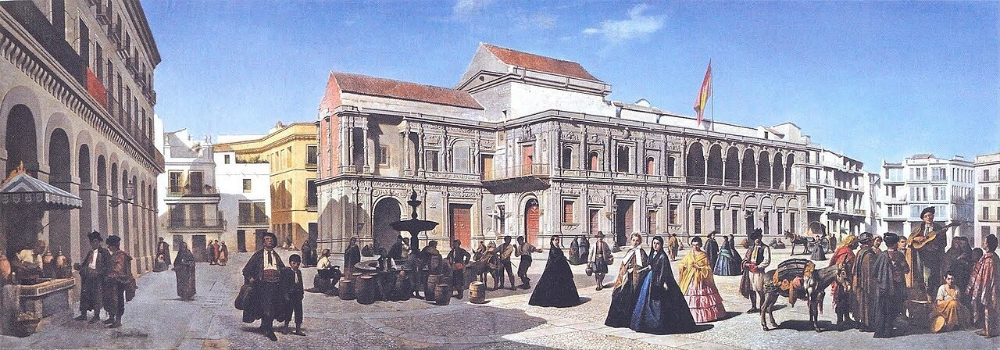

Optima Academy OnlineAn Education Experience Company
Optima Academy OnlineAn Education Experience CompanyUn verano en Buenos Aires
Before you read
Valentina lives in Buenos Aires. Here's the twist you learned on Day 3: her summer isn't in July — it's in January. Keep that in mind as you read, and it will make sense.
Listen and read along
Press play, follow the text, and notice the bolded verbs — a mix of Semester 1 and last week.
Play the reading
«¡Hola! Me llamo Valentina y soy de Buenos Aires, la capital de Argentina. Aquí las estaciones están al revés: en julio hace frío porque es invierno, y en enero hace calor porque es verano. Hoy hace sol y no hay clases. Estoy muy contenta. Este fin de semana mi familia y yo vamos a ir a la playa en Mar del Plata. Mi hermano va a nadar y mis padres van a descansar. Yo voy a leer y luego voy a comer un helado. ¡Me gusta mucho el verano en Argentina!»
Glosario: las estaciones (the seasons) · al revés (backwards / flipped) · este fin de semana (this weekend) · descansar (to rest) · un helado (an ice cream)
Valentina lives in Buenos Aires today. Emeric Essex Vidal painted its main square two hundred years ago, looking out through an arch of the old covered market, the Recova. The white building with the tower is the Cabildo, the town hall of colonial times. The tall white obelisk on the right was built in 1811 to celebrate the May Revolution of 1810, when Buenos Aires began to govern itself. Today the square is called the Plaza de Mayo.
One more look: what are the riders wearing? (click for a hint)
Check your understanding
Your turn: in Spanish, say one thing Valentina's family is going to do. Say it out loud, then reveal a sample.
Five tools, five jobs
Here's your whole toolkit so far. They are not interchangeable — each does a different job. Listen and read across the rows:
| Tool (from) | Its job | Example · listen |
|---|---|---|
| ser (S1) | who / what someone is · origin | Yo soy de aquí. |
| estar (S1) | location · how they feel now | Yo estoy en casa. |
| tener (S1) | what someone has · age | Yo tengo quince años. |
| gustar (S1) | what someone likes | Me gusta el verano. |
| ir a + verb (this module) | what someone is going to do | Yo voy a nadar. |
Argentina es uno de los países más grandes del mundo hispano (one of the biggest countries in the Spanish-speaking world), y su capital, Buenos Aires, está en la costa del Río de la Plata. Its climate stretches from subtropical in the north to icy Patagonia in the south. Because Argentina sits below the equator, the year runs backwards to a North American one: schools break for summer vacation in December through February, and July is deep winter — prime time for skiing in Bariloche.
Two Argentine traditions you'll hear about all semester: the mate and the asado. Mate is a shared herbal tea sipped from a gourd through a metal straw — passing it around is an everyday act of friendship. The asado is a weekend barbecue that can last all afternoon. When Valentina says «vamos a ir a la playa,» a family plan like that is the same warm, unhurried togetherness at the center of Argentine life — and it's exactly the kind of scene this módulo teaches you to talk about.
When Valentina's family says «vamos a la playa,» they likely mean Mar del Plata, Argentina's most famous beach city, about five hours south of Buenos Aires. In January — the peak of summer — millions of porteños head there for sun and sea. It's the southern-hemisphere version of a July beach trip in the U.S.
You read a real paragraph and understood it — weather, seasons, and plans, all in one story from Argentina. ¡Hasta mañana! (See you tomorrow!)
